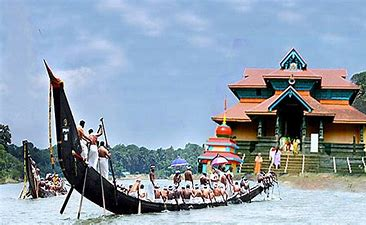
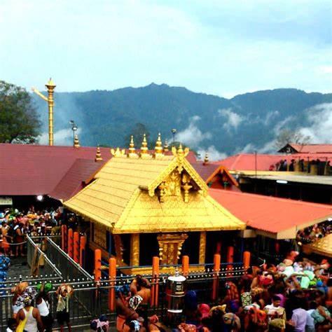
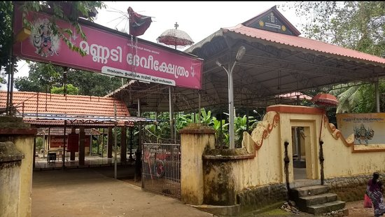
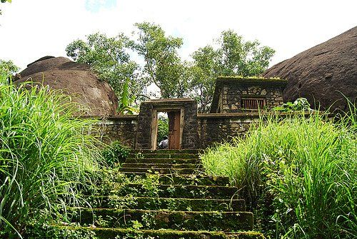
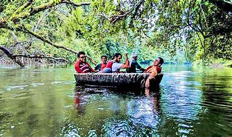
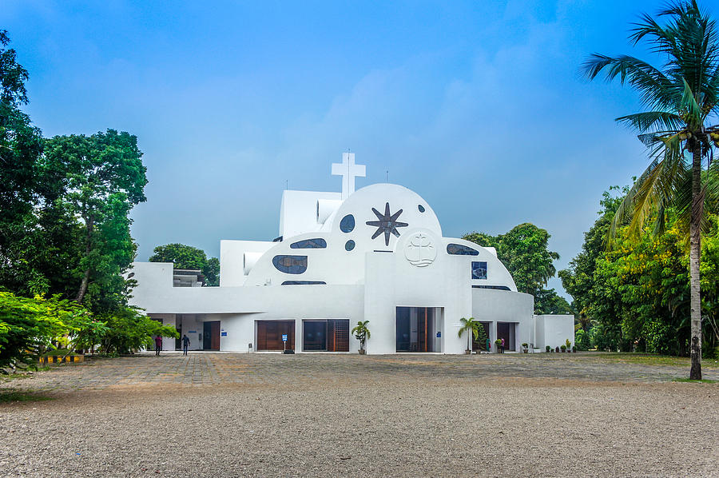

PLACES TO VISIT IN PATANAMTHITTA
Aranmula

Held after the festival of Onam, the Aranmula Boat Festival draws a crowd of thousands. The village is requested to come to the scene through devotional Vanchipattu songs that are sung by oarmen, singers and all the others who have gathered to watch the race. Aranmula is situated 9 km west of Chengannur on the Ernakulam-Kollam road.
Perumthenaruvi

The waterfall formed by the Pamba River as it plunges into a rocky ravine about 100 ft below, Perumthenaruvi is a popular picnic spot. The picturesque location and the perfect setting for camping make it a well-liked destination.
Sabarimala

The temple dedicated to Lord Ayyapa is situated high on the Western Ghats and can be reached only by foot. The temple is thronged by thousands of pilgrims everyday, especially during the time when the Makarajyothi (a divine light that appears above the shrine) is seen. People of any religion can visit this temple. However, for women, entry is allowed only to those below the age of ten or above the age of 60.
Mannadi

Mannadi has a memorial dedicated to Diwan Velu Thampi Dalawa of the erstwhile state of Travancore, who rebelled against the British. An ancient Bhagavathi Temple with exquisite sculptures is also nearby. The Kerala Institute of Folklore and Folk Arts are also close by.
Kaviyoor

Temples dedicated to Lord Hanuman on the banks of River Manimala, make Kaviyoor an important pilgrimage centre. A temple dedicated to Lord Shiva, 3 km east of Tiruvalla, at Trikkakudi, is famous for its beautiful Pallava style of architecture.
Konni

A village township near Pathanamthitta, Konni has acres of thick forest with wild animals. It is for this reason that Konni has emerged as a tourist spot for safaris and trekking. Sightings of wild animals make the forest safari very exciting. The view of the village from the top of the hill is an amazing sight.
Parumala

It is here that Mar Gregories Metropolitan, the declared saint of Malankara Orthodox Church died. The Ormapperunnal celebrated in his memory on the first and second of every November, is attended by thousands.